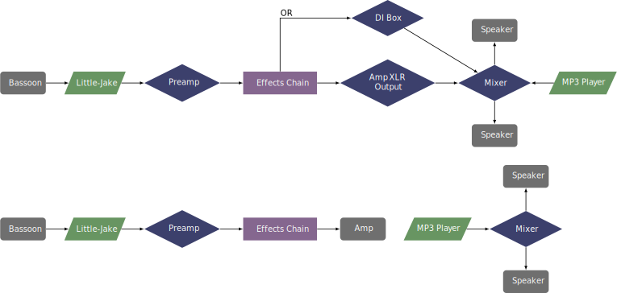

This piece was transcribed for bassoon by the composer in 2019. The original composition is called Drum `N' Bari, written for baritone saxophone and a prerecorded track in 2014. The transcription was written for the electric bassoon and was premiered by Benjamin Bradshaw in 2019. Contact the composer for materials for this piece at his website.
The composer left the decision about the electronics completely to the performer. The score has indications of a lyrical melody and heavy metal intensity. The premiere performance used a chorus effect for the lyrical sections and fuzz for the more intense music. Again, the performer has the freedom to use whatever effects pedals they have for this piece.
The setup is slightly more complicated due to mixing the live electronics with the prerecorded track. There are two options: combine the two different signals—using a mixer with a DI box, or XLR output of an amp—and route them to the same speakers, or having separate speaker setups onstage. Both options are shown below. 
This piece has some very fast arpeggios that could pose some difficulty for undergraduate students. The tempo for this piece is quarter note equals 152 beats per minute, and it features extended passages of sixteenth notes, but there are not many other technical difficulties in this piece. The electronics are completely up to the performer, so they can be as simple or complex as the performer desires. This could be performed by an advanced undergraduate student with good technical skills.
This piece draws very heavily from electronic dance music. There is a steady dance beat for most of the track, but some other electronic music techniques and samples are also used. This piece would be a great fit for audiences that would enjoy popular music as opposed to avant-garde music.
©2024 by Benjamin Bradshaw
Logo ©2024 by Hannah Bradshaw